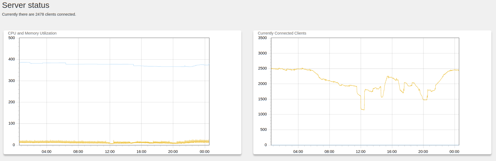
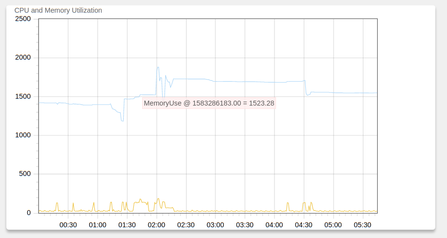

With the present architecture, Velociraptor only supports a file based data store. This makes it easy to deploy as you don’t need to set up an elaborate database backend, but this is inherently limited to a single machine.
We expect this limitation to be removed in the near future but until then, people are often asking us about how to spec the server and how many endpoints Velociraptor can support in its current form.
In this page we discuss some of the performance limitations of the platform. It is important to understand how performance affects the framework and how Velociraptor manages finite resources to scale up efficiently.
The following discussion is fairly technical and goes into a lot of specific implementation details.
One of the important considerations is how many resources are used by an idle deployment - i.e. one at which clients are simply connected to the server but no active hunts or collections are run from them. It is important to note that even when clients are idle, Velociraptor always collects endpoint footprint telemetry by sampling Velociraptor’s own CPU and Memory footprint every 10 seconds on each endpoint.
We typically deploy on AWS a t2.large (8Gb 2 core VM) to support up
to 10k endpoints. Below is a deployment we have that is mostly idle.
CPU load is in the range 10-20% of one core, memory < 400mb when
idle. This is a typical medium sized deployment of around 2.5k
endpoints. Load typically increases linearly - so a 5,000 endpoint
deployment might use twice the CPU load etc. For 20,000 endpoint
deployment a larger size VM would be required.

When idle, the main CPU load is with RSA operations for encrypting and
decrypting messages to the endpoint. Since each endpoint selects an
ephemeral key we need to maintain an in-memory cache of session keys -
this avoids having to do a lot of RSA operations. The size of the
cache is controlled by the Frontend.expected_clients setting and
defaults to 10,000 endpoints. Increasing endpoints above that will
overflow the memory cache and will results in a lot more RSA
operations. The cache can be increased safely at the cost of added
memory use.
When running many hunts, the server simply collects results from the endpoints. Due to the unique architecture of Velociraptor, all collections are simply queries that run on the endpoints. Queries can return a result set (essentially rows and columns of JSON encoded values), or bulk data (e.g. for file uploads). The server simply stores these results in the filestore.
For this reason even hunts that intuitively seem expensive are actually very light on the server. For example, consider an artifact that applies a Yara signature to many files on the endpoints. This might search through many Terabytes of data collectively on all endpoints, but if the signature is good will only report few relevant results. In this case the load will be very small on the server (client side load can be managed through the op/sec client side query limiting mechanism).
On the other hand, consider a hunt that just collects a lot of data
(e.g. the Windows.KapeFiles.Targets artifact). This causes the
clients to send a lot of bulk data which the server needs to decrypt,
then store on the filesystem. This will lead to a lot of server load
(and will also saturate inbound bandwidth). It is easy to collect
hundreds of Gigabytes unintentionally at scale.
When receiving a lot of data from many clients simultaneously, the Velociraptor frontend must buffer the data in memory before decrypting and processing the data. Therefore the limiting factor is actually memory and not CPU load. The total number of concurrent connections determines the total memory used.
To protect itself, the frontend has a limit on the total number of
concurrent client connections. This is controlled by the
Frontend.concurrency setting. The default is 6 but if you have more
than 2Gb of RAM you should probably increase that to 20 or more.
The concurrency setting limits the number of clients that are allowed to upload data to the server at the same time. Lowering this value reduces memory use, but increases the time taken for hunts to complete. Many hunts are not terribly urgent so this is a reasonable trade off.
In the current version (0.4.1) there is no QoS mechanism on the communications so while a heavy hunt is in progress, interactive investigation (e.g. through the VFS view) can not proceed. Therefore currently this is a disadvantage of lowering concurrency too much. We expect the situation to change in the near future.
Typically hunts progress very quickly and do not transfer a lot of data (Collecting large quantities of data not only leads to server saturation, but also leaves the investigators with huge quantity of data to post process - it is better to be more surgical in collection and move processing to the query on the endpoints as much as possible).
The figure below shows a typical day of heavy hunting on the deployment shown in the previous figure (about 2.5k endpoints). Each of the CPU spikes is a hunt, and most hunts complete in a few minutes. During the hunt CPU load rises to about 160-180% (this is a 2 core VM), but memory remains very stable due to the concurrency controls described above.

By far the most important aspects of specing the server is the amount of disk space available. Since Velociraptor uses a simple filesystem to store all its data, it is easy to manage disk space by deleting or archiving old data.
It is very easy to fill up disk space with Velociraptor because it is so fast and responsive. For example issuing a large triage file collection for user’s web browser related files might include on average 500Mb of Internet cache files per client - on a 10,000 machine deployment this will collect 5tb of data! Since Velociraptor is very fast, if you have excellent connectivity to your endpoints, you will fill up the disk in a matter of hours!
Always be aware of the multiplicative effect of scale. In many cases it might require a change of mindset - if you are most familiar with interactive “traditional” digital forensics it might require re-thinking your approach when scaling up investigations and issuing more surgical artifact collections.
If your disk fills, The Velociraptor frontend will be unable to receive any data from endpoints (will begin serving 500 responses). Due to Velociraptor’s architecture, clients will queue up outgoing messages to the server in their local buffer file (by default up to 1Gb).
This might result in a situation where after clearing the disk space, Velociraptor will immediately fill it up again with more data queued to be sent by the clients. If this happens you need to stop active hunts to actively remove their results from clients’ buffer files.
The following describes the directories one typically finds in the filestore directory:
acl : This contains the ACL policies for all users.
artifact_definitions: This contains custom artifacts that were added through the GUI
client_index and clients: These contains information collected
from all clients. It is possible to completely remove these
directories and restart the server. Clients will simply re-enrol
automatically.
config: This directory contains server specific configuration
that is changed through the GUI.
downloads: Contains Zip files prepared via the GUI’s “Prepare Download” button.
hunt_index and hunt: contain metadata related to managing
current hunts. It does not typically contain a lot of data.
journals are journal files that allow Velociraptor to follow all
clients at the same time. It is safe to remove journal files at any
time as they can become large. They typically contain events from
client and server monitoring queries.
notebooks contains the user created post processing and analysis
notebooks. You probably do not want to remove these.
server_artifacts store the results of collection Server Artifacts
in the GUI.
users contains information about all GUI users.
The majority of the disk usage appears in the clients and journals
directories so it is worth aggressively managing that usage.
In the AWS cloud it is possible to resize disk space dynamically. See Requesting Modifications to Your EBS Volumes and Extending a Linux File System After Resizing a Volume. You can do this without even restarting the server.